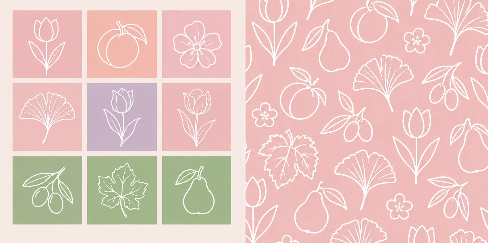
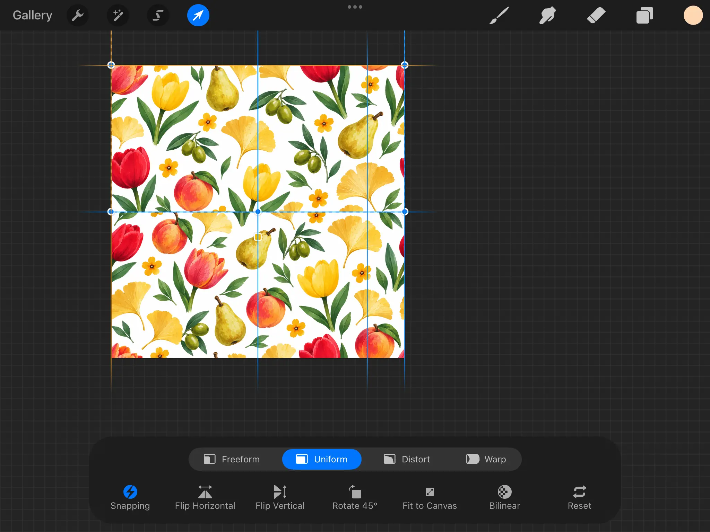

Membuat pattern tidak selalu berarti harus menggambar seluruh motif dari awal. Kalau kamu sudah memiliki kumpulan clip art seperti bunga, daun, titik-titik, ikon musiman, atau elemen tematik lainnya, elemen-elemen tersebut bisa menjadi bahan dasar untuk membuat sebuah seamless pattern.
Kuncinya adalah bagaimana elemen tersebut disusun, bagaimana bagian tepi canvas dipertemukan, dan bagaimana pattern diuji sebelum akhirnya diekspor.
1. Siapkan Elemen Clip Art
Mulai dengan mengumpulkan atau menggambar elemen-elemen kecil yang akan menjadi “bahan” pattern kamu — misalnya bunga, daun, titik-titik, ikon musiman, atau motif tematik lain.
Ada beberapa hal yang perlu diperhatikan sebelum mulai menyusun pattern:
- Buat setiap elemen di layer terpisah agar mudah diatur ulang.
- Pastikan resolusi cukup tinggi, idealnya 300 DPI, agar hasil akhir tetap tajam saat dicetak atau diperbesar.
- Variasikan ukuran dan orientasi 2–3 elemen serupa, misalnya bunga besar, sedang, dan kecil, supaya pattern tidak terasa monoton.
- Kalau kamu bekerja di Procreate, canvas persegi dengan ukuran genap seperti 2000 × 2000 px atau 3000 × 3000 px akan memudahkan proses tiling.

2. Tentukan Ukuran Canvas Pattern (Tile Size)
Ukuran canvas ini adalah satu “ubin” atau tile yang nantinya akan diulang tanpa putus ke segala arah.
Tentukan ukuran final di awal dan usahakan jangan mengubahnya di tengah proses, karena perubahan ukuran dapat menyulitkan penyusunan elemen di bagian tepi.
3. Susun Elemen Secara Acak namun Seimbang
Letakkan elemen clip art di canvas dengan pola sebaran yang terasa alami. Hindari elemen yang berbaris terlalu rapi, kecuali memang kamu menginginkan pattern geometris.
- Variasi jarak: jangan menempatkan elemen dengan jarak yang sama persis.
- Keseimbangan visual: sebar warna dan ukuran elemen secara merata ke seluruh canvas dan hindari satu sudut terlalu penuh sementara sudut lain kosong.
- Rotasi acak: putar sebagian elemen agar pattern terlihat lebih organik.
4. Uji Seamless dengan Teknik Offset
Ini adalah langkah krusial. Untuk memastikan pattern benar-benar mulus saat diulang, gunakan teknik offset klasik.
Geser seluruh isi canvas sebesar 50% dari lebar dan 50% dari tinggi. Di Procreate, ini bisa dilakukan dengan fitur Offset di menu Canvas jika tersedia pada versi yang kamu gunakan, atau dilakukan secara manual dengan memotong dan menempel ulang layer.
Setelah offset, garis sambungan akan muncul di tengah canvas karena tepi kiri dan kanan serta tepi atas dan bawah kini bertemu di tengah. Tambahkan atau geser elemen untuk menutup garis sambungan tersebut sampai tidak terlihat jahitan sama sekali.
Setelah itu, geser kembali ke posisi semula dan cek ulang. Tepi kiri harus menyambung mulus dengan tepi kanan, begitu juga tepi atas dengan tepi bawah. Ulangi proses ini beberapa kali sampai tidak ada elemen yang terpotong aneh atau celah kosong di garis sambungan.

5. Uji Tampilan dengan Tiling
Setelah yakin tile sudah seamless, lakukan uji coba dengan menyusun beberapa salinan tile secara berdampingan, misalnya dalam grid 2 × 2 atau 3 × 3.
Uji ini akan langsung memperlihatkan apakah pattern terlihat mulus atau justru memiliki pola berulang yang terlalu mencolok. “Pengulangan yang terlihat” menjadi red flag utama ketika pattern direview untuk platform stock.
6. Finalisasi Warna dan Variasi Colorway
Setelah pattern dasar selesai, buat beberapa varian warna atau colorway dari pattern yang sama.
Ini bisa membantu memperbanyak jumlah aset yang dapat diunggah dari satu desain dasar sekaligus memberi pilihan kepada pembeli atau klien di platform seperti Spoonflower atau Adobe Stock.
7. Ekspor dalam Format yang Sesuai
Sesuaikan format ekspor dengan tujuan penjualan:
- JPEG/PNG resolusi tinggi untuk kebanyakan platform microstock seperti Adobe Stock, Shutterstock, dan Vecteezy.
- Vector/EPS jika platform mensyaratkan format vektor atau kamu ingin pattern bisa diskalakan tanpa batas.
- Preview tile dan tiling grid sebagai thumbnail agar reviewer dan calon pembeli bisa langsung menilai kemulusan pattern.
8. Tambahkan Keyword dan Deskripsi Sebelum Upload
Terakhir, siapkan judul, deskripsi, dan kata kunci yang relevan — seperti tema, warna dominan, gaya ilustrasi, serta musim atau acara jika ada — untuk membantu aset ditemukan di platform microstock.
Jika sebagian elemen dibuat dengan bantuan AI, pastikan mengikuti aturan disclosure masing-masing platform sebelum submit.
✨ Syaima's Notes
Jangan meremehkan elemen kecil. Sebuah bunga, daun, atau ikon sederhana bisa menjadi bahan dasar untuk membuat pattern yang jauh lebih bernilai ketika disusun dengan tepat.
Dan kalau kamu sudah memiliki banyak clip art, kamu sebenarnya sudah memiliki banyak kemungkinan pattern. Yang perlu dilakukan bukan selalu membuat sesuatu dari nol, tetapi belajar melihat bagaimana satu elemen bisa dikembangkan menjadi sebuah sistem visual.
Tips tambahan: simpan file kerja seperti PSD atau Procreate project dengan layer terpisah untuk tiap elemen. Dengan begitu, kamu bisa membuat variasi baru di kemudian hari tanpa harus mengulang seluruh proses dari awal.
Happy creating! 🍃